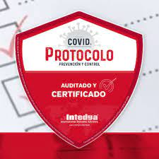
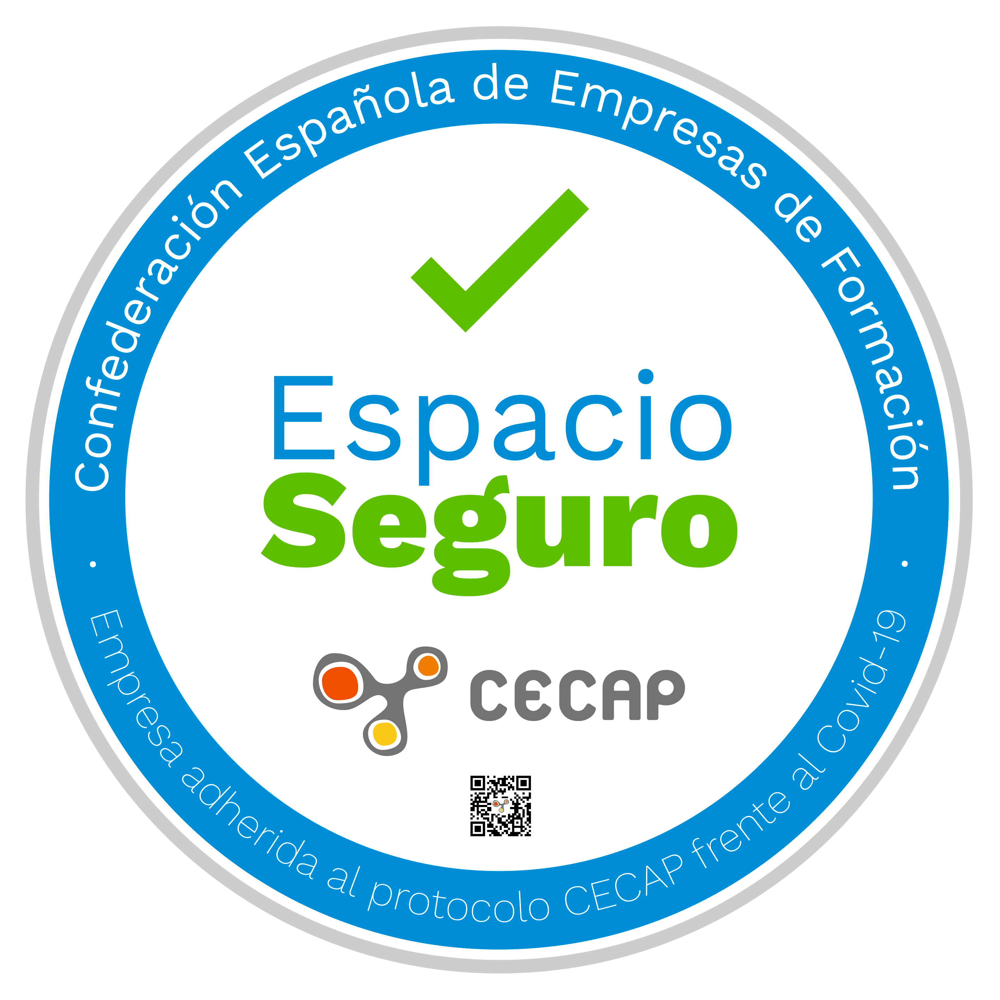

ACADEMIA OMJ
Normativa COVID-19
De cara a la vuelta a las clases en este verano 2020, la academia de idiomas Big Ben quiere comunicar a las familias las siguientes medidas de seguridad que se van a tomar para asegurar una correcta protección y prevención del COVID-19 entre nuestros alumnos y profesores. Serán de obligado cumplimiento por parte de todos. Su correcta realización garantizará el buen devenir de las actividades.
- - Rellenar y entregar en la academia el primer día de clases el documento de RECLARACIÓN RESPONSABLE .
- - Será OBLIGATORIO llevar puesta correctamente la mascarilla durante las clases.
- - La distancia entre alumnos será de al menos 1,5 metros tal como exige la normativa actual, y tal como se observa en las fotografías del documento adjunto.
- - Los grupos de trabajo son de un máximo de 10 personas, atendiendo a las indicaciones relativas al COVID-19.
- - En las instalaciones habrá botes de gel hidroalcohólico para uso de todos.
- - Al finalizar las clases, se procederá a la limpieza y desinfección de las aulas y zonas comunes, así como a la ventilación continua de las instalaciones.
- - Se adjunta anexo informativo con cuadro resumen de medidas de prevención, higiene y promoción de la salud frente a COVID-19 para centros educativos en el curso 2020-2021 publicado el 22-06-2020 por el Ministerio de Educación y Formación Profesional del Gobierno de España.
- - Cuando estando en casa se aprecien síntomas relacionados con el coronavirus, tal como indica sanidad/Gobierno de Cantabria, “contactará con su servicio de salud. Además, dicha persona deberá notificar a la mayor brevedad posible, cualquier situación en la que varias personas desarrollen síntomas o situaciones de riesgo en el teléfono gratuito 900 612 612”.

